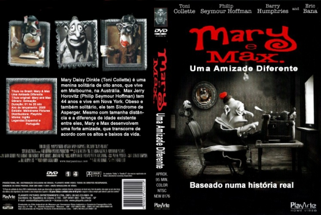
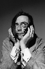

Outro Título:Mary and Max
País:Australia, 92 minutos
Idiomas falados:Inglês
Gênero(s):Animação, Comédia, Drama
Diretor(s):Adam Elliot
Escritor(es):Adam Elliot
Codec:MPEG-2 (DVD)
Número: 5809


Certificado:12
Sinopse:
Mary Daisy Dinkle é uma menina solitária de oito anos, que vive em Melbourne, na Austrália. Max Jerry Horovitz tem 44 anos e vive em Nova York. Obeso e também solitário, possui Síndrome de Asperger. Um certo dia, Mary encontra o endereço de Max em uma lista de endereços do correio de Nova York. Então resolve lhe escrever uma carta contando um pouco da sua vida. A partir daí, desenvolvem uma forte amizade, mesmo com tamanha distância e a diferença de idade existente entre eles, que transcorre de acordo com os altos e baixos da vida. Baseado em uma história real.
Elenco: 

Tipo de mídia: DVD5,
Legendas: Espanhol, Português, Sem Legendas
Alugado: Não
Tela: Anamorphic Widescreen